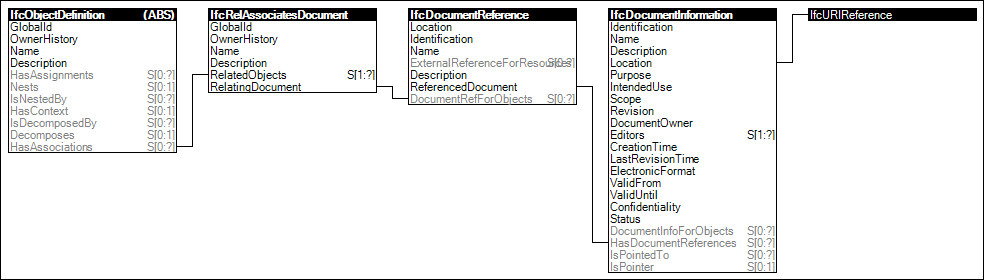

Link to this page
Link to this pageAny object or property can have associated documents indicating external files. Documents may be referenced in their entirety such as to capture product brochures, data sheets, multimedia content, or thumbnail images. Contents within documents may be referenced from any object, and may be used to synchronize information in other files such as work schedules for project management applications.
Figure 2 illustrates an instance diagram.
 |
Figure 2 — Document |